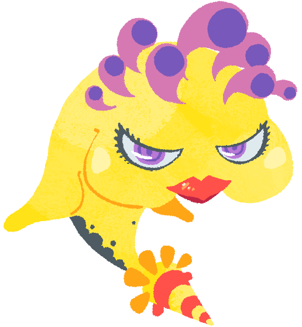

JenniferA fish-faced Isogashimachine with an enormous appetite. It keeps people occupied by constantly begging for food, to which they easily give in. It's not so unpopular with the locals however, as they somehow find it attractive. Kururin sure doesn't, especially when it charges after him. |
 |